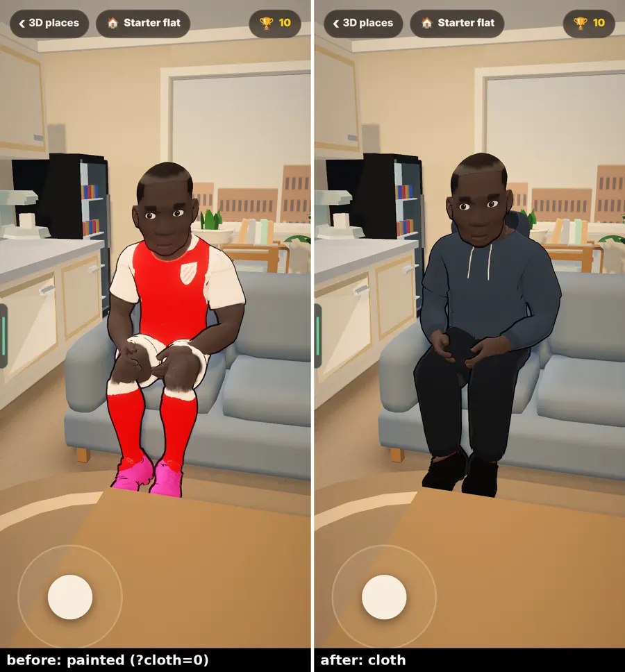
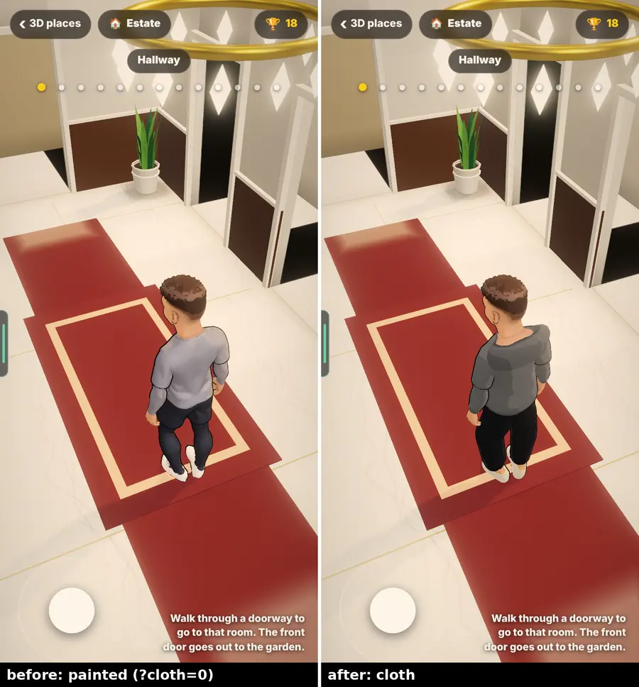
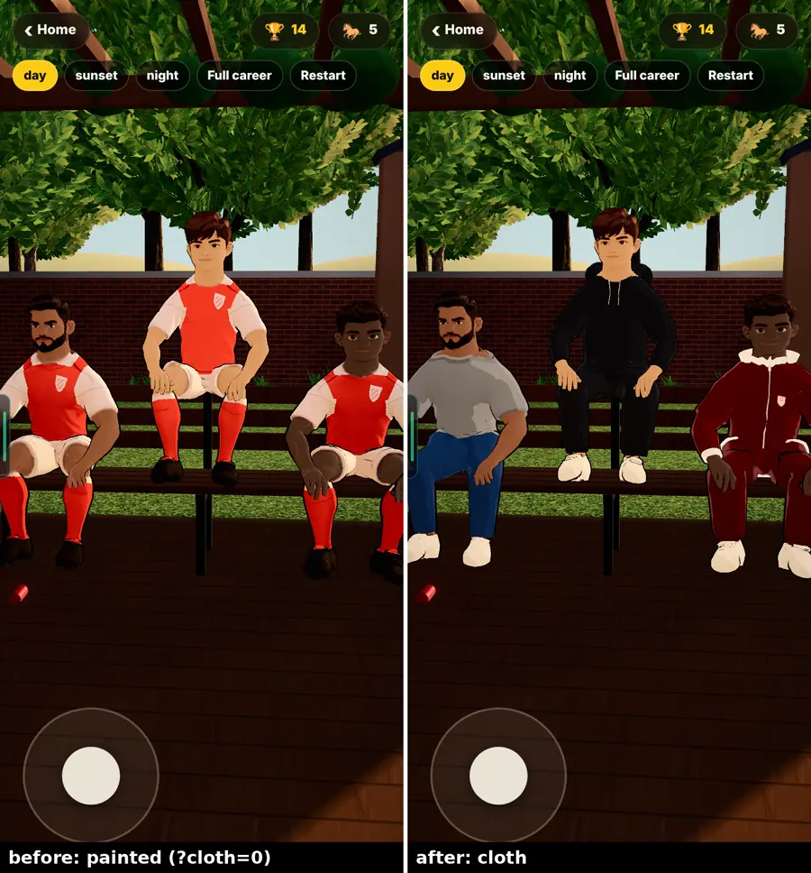
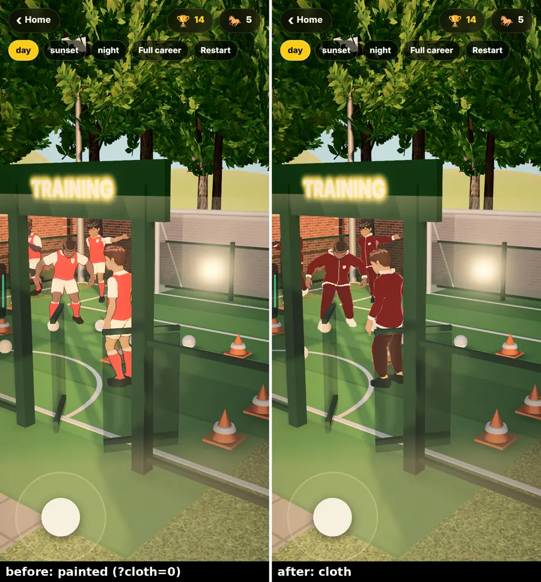
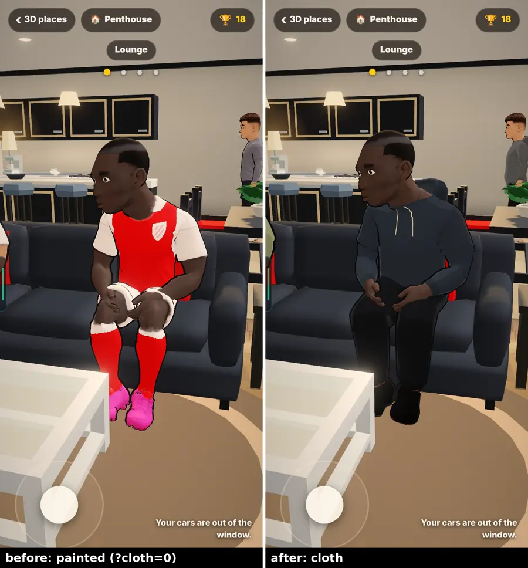

ProblemThe 3D phone only lived on a test page. Harry: "why does the phone transition to 3D not work?"
WhyThe game's Phone tab still opened the flat phone. The house and the phone were two separate screens.
FixThe house and the phone are now one screen, so the house never reloads between them. Weak phones keep the flat phone.
2 · REAL CLOTHES IN THE HOUSES AND THE GARDEN
At home nobody wears a match kit any more. Clothes are real cloth, dressed by who the person is.
Youyour saved home outfit, in cloth: hoodie & joggers, tee & jeans, shirt & chinos, club tracksuit or smart coat
You, nothing pickeda hoodie at home, in the garden and the shop
Team-matesabout 1 in 4 in club training wear; the rest a tee, hoodie, shirt or polo in muted colours. The same man always wears the same.
Garden pitchclub training tracksuits
Match and trainingstill the kit, no change

Left: before, kit and pink boots on the sofa. Right: a hoodie, joggers and trainers.

You arriving at the estate. Look at the hood and the joggers on the right.

The gazebo bench: three kits before; a tee and jeans, a hoodie, a tracksuit after. All sit on the slats.More pictures (2)

The garden pitch: numbered kits before, training tracksuits after.

Penthouse lounge: the man behind wears a polo.
ProblemTeam-mates sat on your sofa in full kit, socks and boots. Your own clothes were painted on the skin.
WhyCloth clothes were only switched on in cut scenes.
FixCloth is on in all six houses and the garden. Harry: "yes the clothes films are better, put them in houses".
Seen on screen in all six houses and the garden, on the build machine. Each person costs about 2 more draws; every room stays under its limit.
3 · NO OUTFIT PICKED? A HOODIE, NOT THE KIT
If you have never picked a home outfit, you now wear a hoodie at home, in the garden and in the shop. It used to be the kit.
KNOWN ISSUES
The house behind the phone can stall while it loads
It loads after the phone has been up 2.5 s, or when you press BACK. A blurred picture shows until then.
Garden → phone took about 3 s on the build machine
That machine has no graphics chip. Your phone is the real test.
Phone text is about 55% of its flat size your call
Judge it on your phone.
The eyes open in 0.6 s, not the approved 1.2 s blink B
Shorter so the phone is quick to use.
Clothes leftovers
A notch at the tee's hem, the hood is a simple lump, and the first team-mate wears the same slate hoodie in every house.
The shop not looked at
Your shop self uses the same clothes, but nobody has checked it on screen.
Carried from 0.141
Cut scenes not ready; the mentor's face is pale; cars look damaged up close; in bed he is a head over a flat block; speed on a phone unknown.
NEXT
Your phone test: text size, smoothness, load time
Fix the clothes leftovers and give team-mates more variety
Look at the shop in cloth
The numbers, if you want them
Tap to phone (dev server): flat phone 332 ms, 3D phone 406 ms.
Phone moves: eyes open 0.6 s (a tap skips). BACK: hand down 0.3 s, camera out 0.7 s. Phone button: into the eyes 0.3 s + raise 0.3 s. House behind loads after 2.5 s. Garden → phone about 3 s on the build machine.
Clothes cost: about +2 draws and +9.5k triangles per person. Worst room, estate lounge (you + 2 team-mates): 68 → 74 draws (limit 120), 96k → 122k triangles (limit 150k). Garden arrival 132 → 133 draws (it was already over 120 before this).
Seats: the seat check reads the cloth (+3 cm), so nobody sinks into the sofa: 0 cm through.
PREVIOUS VERSIONS
v0.141 · 21 Nov 2026 · Sleep, living houses, cloth clothes
Added: sleeping in your house passes the night (+10 energy, once between matches); clothes are cloth in cut scenes; 60 follow-through stories (test page).
Changed: all six houses are lived in; the kit man drill has six rounds (test page); cut scenes better, not ready.
Fixed: feet land apart (walking gap 0.5 → 9.3 cm); sitting, clean faces, the ball at his feet; kick off 0.28 → 0.23 s.
Still open from it: cut scenes, the mentor's face, cars up close, the bed pose, speed on a phone.
v0.138 · 13 Nov 2026 · New home, Team room, bots, admin
Added: a new home at knowitball.co.uk; the Team room rebuilt; five bots with their own pages; the Patch bot announces notes by itself.
Changed: the game is now Road to the Golden Ball; recordings go to Cloudflare first; one admin home and look.
Still open from it: Cloudflare not joined up on the live site, so the nightly database backup failed.